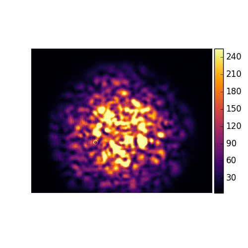

Extreme Learning Machines and Reservoir Computing
In this research line, we explore optical implementations of Extreme Learning Machines (ELMs) and Reservoir Computing (RC) using nonlinear media. By leveraging the complex dynamics of light in complex media and paraxial fluids, we perform fast, energy-efficient information processing directly in the optical domain. Our goal is to develop all-optical computing platforms capable of handling tasks such as pattern recognition and signal classification, pushing the boundaries of machine learning with light-speed, hardware-based solutions.
